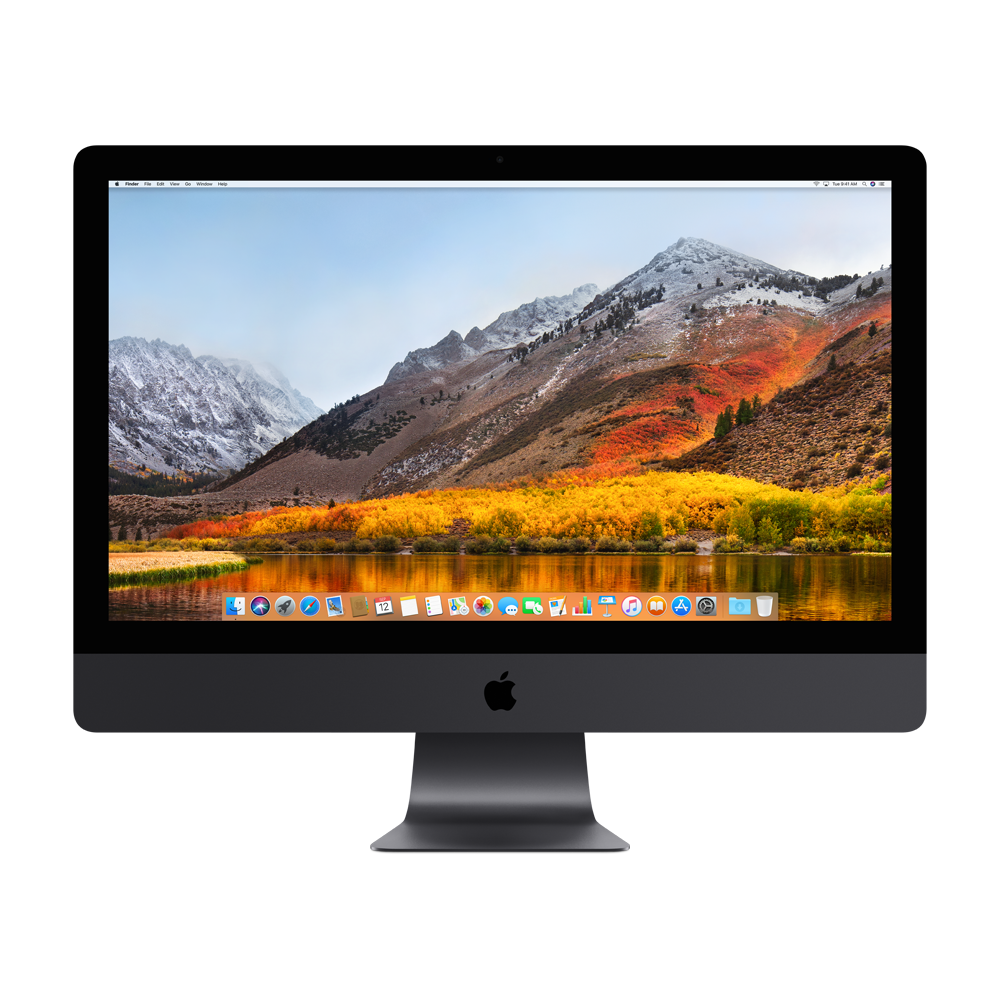

Apple
Laptops
لاب توب MacBook Air
1 - لاب توب MacBook Air (M1,2020)
- بسعر يبدأ من 15000 جنيه. - يأتي مزودا بمعالج ابل إم 1 الجديد الذي تقول الشركة أنه يوفر اداء اسرع حتى 3.5 مرة مقارنة مع الجيل السابق . - ذاكرة موحدة 8 جيجابايت قابلة للإعداد إلى 16 جيجابايت . - قرص إس إس دي سعة 256 جيجابايت قابل للإعداد إلى 512 جيجابايت . - نظام التشغيل ماك أو إس وهو النظام الذي يدير كل ما تفعله اجهزة ماك . - بطارية ليثيوم بوليمر مدمجة بطاقة 49.9 واط في الساعة . - كاميرا 720 إتش دي ويدعم الفيديو .
2- لاب توب MacBook Air (13-inch, 2017)
- بسعر يبدأ من 12000 جنيه . - معالج Intel Core i7 ثنائي النواة بتردد 2.2GHz (يصل إلى 3.2GHz مع خاصية Turbo Boost) . - ذاكرة LPDDR3 داخلية سعة 8GB بتردد 1600MHz . - قرص SSD سعة 256GB أو 512GB . - كاميرا FaceTime HD 720p . - محول طاقة MagSafe 2 بقدرة 45 واط مزود بنظام إدارة الكابلات؛ ومنفذ طاقة MagSafe 2 .
لاب توب MacBook Pro
1 - لاب توب MacBook Pro 13-inch(M1,2020)
- بسعر يبدأ من 20000 جنيه . - جهاز MacBook Air الجديد، متوفر بشريحة M1. - بذاكرة RAM 8 غيغابايت، مع هارد SSD بسعة 512 جيجابايت . - معالج بثماني أنوية، وكرت شاشة ثماني النواة أيضاً، ويمكن ترقية التخزين حتى 2 تيرابايت. - يتميز MacBook Air بعدم وجود مروحة للتبريد، بينما لا يزال جهاز MacBook Pro يعتمد على المراوح، التي تعمل بصوت منخفض لا يشتت الانتباه. - أبعاده التي تبلغ 1.56 × 30.41 × 21.24 سم، ووزنه البالغ 1.4 كجم .
2 -لاب توب MacBook Pro 16-inch(2019)
- بسعر يبدأ من 36000 جنيه . - ذاكرة عشوائية تصل الي 64 جيجا رام DDR4 بسرعة 2666 ميجا هرتز . - هارد فائق السرعة SSD بسعة تصل الي 4 تيرا بايت . - كرت رسوميات منفصل يصل الي AMD Radeon Pro 5500M بسعة 8 جيجا بايت GDDR6 . - بشاشه عرض16 بوصة رتينا مع إضاءة LED خلفية وتقنية IPS بدقة دقة 2880 × 1800 بكسل مع درجة سطوع 500 شمعة . - بطارية مدمجة 100 واط من نوع ليثيوم بوليمر تدوم حتي 5 ساعات من التشغيل المتوصل .
جهاز iMac
1 -iMac 21.5-inch
- بسعر يبدأ من 17000 جنيه. - معالج Intel Core i5 ثنائي النواة بتردد 2.3GHz، يصل إلى 3.6GHz مع خاصية Turbo Boost . - ذاكرة DDR4 سعة 8GB بتردد 2133MHz . - شاشة مقاس 21.5 إنش (قطرياً) بإضاءة خلفية LED ووضوح 1920 × 1080 مع دعم ملايين الألوان . - قرص SSD سعة 256GB . - معالج رسومات Intel Iris Plus Graphics 640 .
2 -iMac Pro
- بسعر يبدأ من 78000 جنيه. - معالج Intel Xeon W بتردد 3.0GHz يصل إلى 4.5GHz مع خاصية Turbo Boost وحدة تخزين مؤقت بسعة 23.75MB . - ذاكرة DDR4 ECC سعة 32GB بتردد 2666MHz . - 5K شاشة Retina مقاس 27 إنش (قطرياً) بوضوح 5120 × 2880 مع دعم مليار لون . - قرص SSD سعة 1TB . - معالج رسومات غرافيك Radeon Pro Vega 56 مع ذاكرة HBM2 سعة 8GB .
